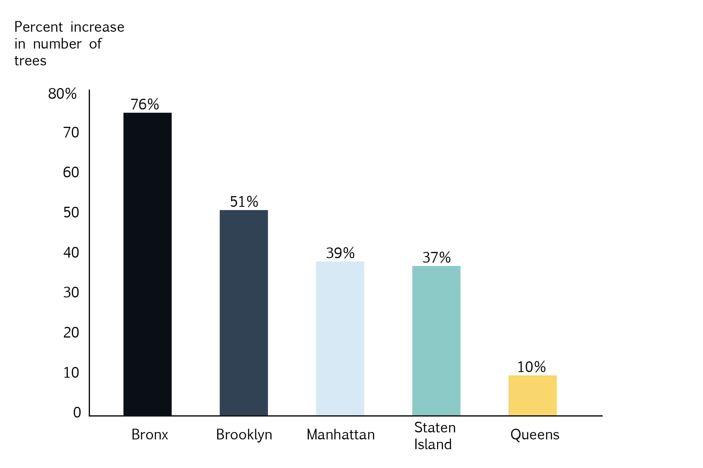
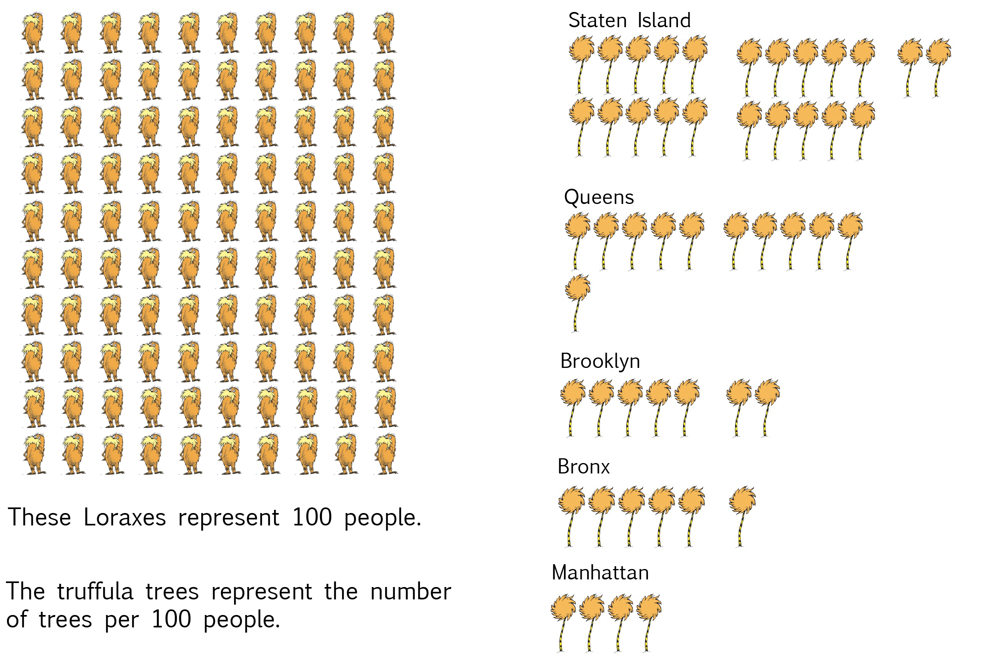
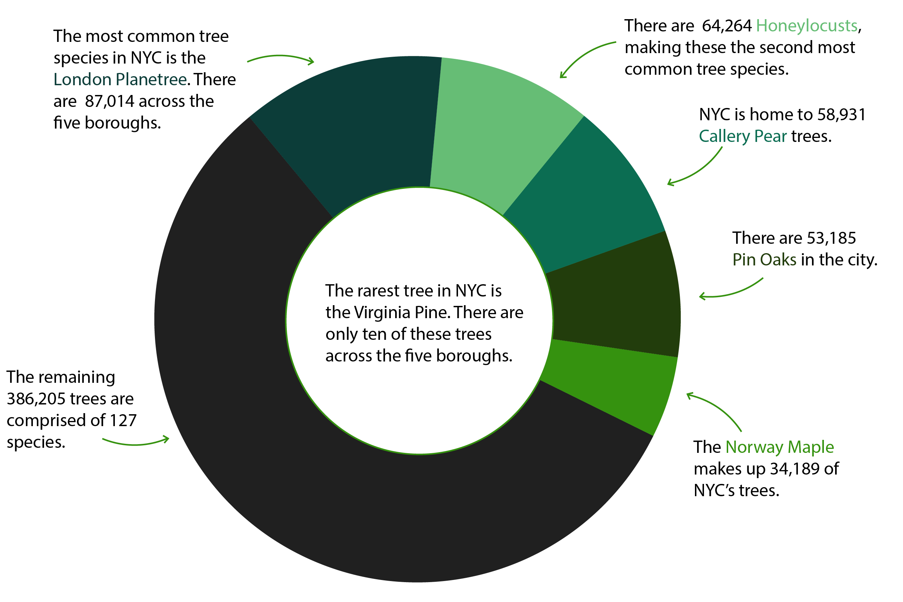

BY Veronica Penney
Published Aug 24, 2018
According to the most recent New York City urban tree count, New York City is now home to 683,788 trees. The count represents a 32% increase from 1995, which represents 166,799 trees.
New York City has 32% more trees than in 1995
The Bronx added trees at higher rate than any other borough.
 SOURCE: NYC Parks
Queens has more trees than any other borough--just shy of one quarter million--but The Bronx has added trees at a greater rate in the past twenty years than any other borough.
Back in 1995, there were about 48,500 trees growing in The Bronx and 47,200 growing in Manhattan. As of the last count, there are 85,200 trees in The Bronx and 65,400 in Manhattan.
Unsurprisingly, Staten Island has the most trees per people

SOURCE: NYC Parks
In terms of size, Staten Island ranks third of the five boroughs, but looking at trees per person, the more sparsely populated borough has about 22 trees per person. That's twice as many trees per person as the runner-up, Queens, which has 11 trees per person.
Five species comprise 56% of NYC's trees
There are 132 unique species of trees across the five boroughs.

SOURCE: NYC Parks